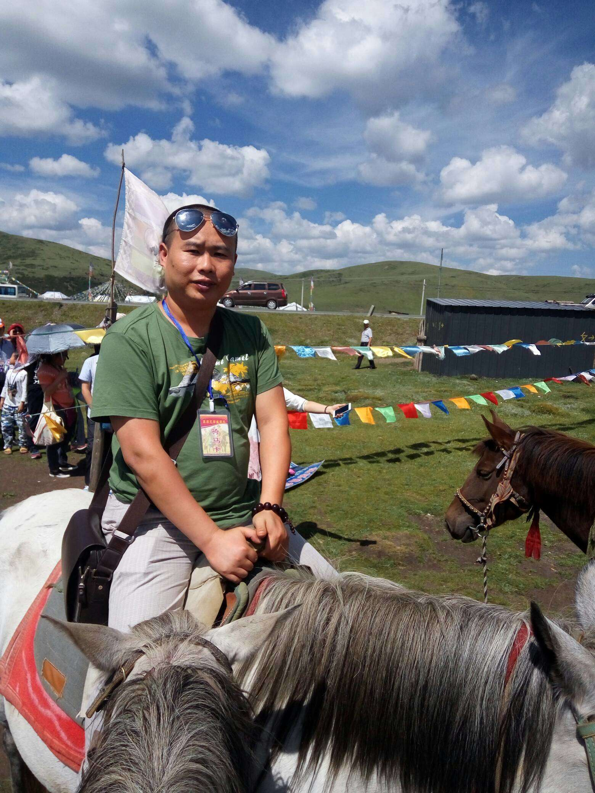
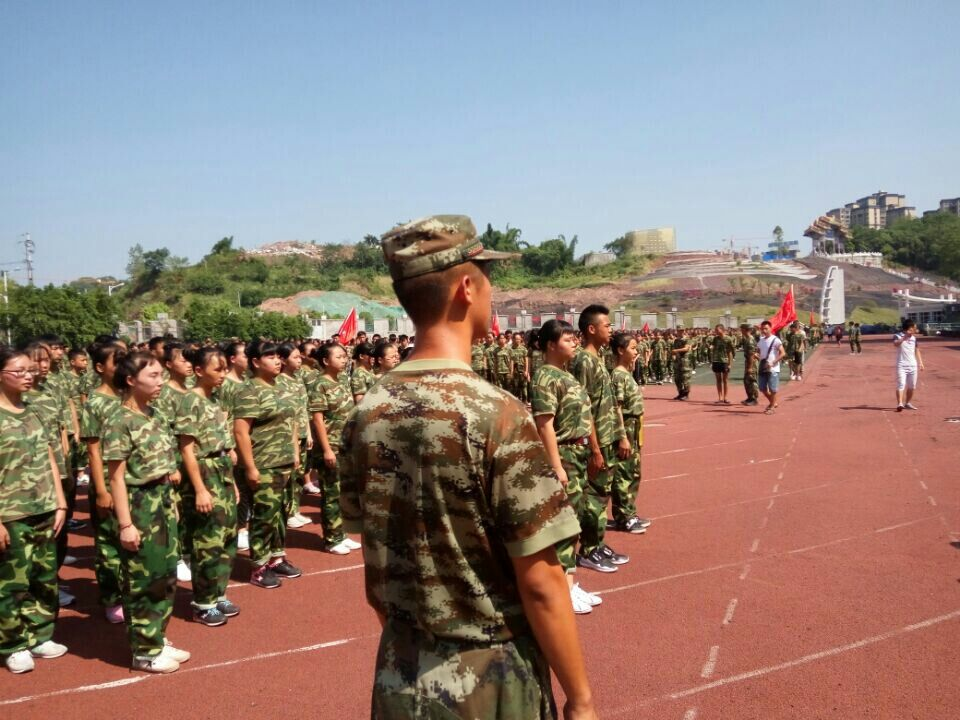

经历了漫长暑假的熏陶，走入教室，看见那些陌生又可爱的新同学，一个班，又聚集了64位充满朝气的少男少女，还有我们新的班主任莫老师。他看起来比较和蔼，一直都在对我们笑，so，在刚开始的时候我们”亲切“地称呼他为”郭德纲“。现在，我们对他有了新的认识，称他为"标标"或"标哥"。
马上，我们迎来了魔鬼军训。军训七天，是我们痛并快乐的七天。我们的教官是一个又酷又帅的汉子，我们叫他冯教官。
军训里，阳光普照，汗水顺着脸颊一颗一颗的滑落。教官带领着我们在操场上不停地训练着正步和齐步走，喊着我们的口号，“发型到位，气质高贵，我们呐喊，二班万岁！”一遍一遍又一遍。枯燥、无味、劳累，但却不得不坚持。因为我们知道这两天来我们学到的不仅仅是站军姿、走正步、练队形。而是一种意识，一种吃苦耐劳的意识，一种坚持的意识，一种团结的意识，一种遵守纪律的意识！其实这些已经太多太多，足以我们一生享用。
军训，是一种考验，也是一种磨炼。短短的七天，让 我们明白了人生中的一个道理“一分耕耘，一分收获”。
军训结束，同学间更加亲密也更加默契，与老师的相处也是更加的融洽。接下来，就是学长学姐们说的枯燥无味的高中生活了，每天“三点一线”寝室，食堂，教室。But，在无趣中也有着一点有趣，那是我们自我丰富的学习生活，上课同学认真听讲，仔细的记录着老师讲的知识点，下课后，同学们与老师们可能会打成一片，互相开着玩笑，讨论着学习，枯燥但却有趣。
一天,这样的生活被打破了，学校通知纪念“12.9”的诗歌朗诵，同学们一个个激情燃烧为了这次比赛每个人都愿意付出休息时间苦练朗诵，终不负有心人，我们获得了第二名，才能符合二班班风。接着随着一片哗啦哗啦的掌声中，运动会开幕啦，运动会上所有的同学都大展身手。跑步，跳远，接力赛都陆续展开。比赛过程中，运动员们全力以赴，后勤部随时关注着运动员，随时准备为运动员们服务，其中最让人感动的是，是同学们的友谊，运动员在跑步过程中累了倦了。想放弃时，这时拉拉队后勤部陪着运动员们跑，边跑边鼓励，这真是世上最好的友情，最终我们荣获2017年学校田径运动会团体总分第一名，这次取得第一，不再二了，但符合我们“发型到位，气质高贵”，运动会的结束，我们又回到了那无聊却有聊的学习生活，但生活总是充满着惊喜和意外，当然这件事是惊喜的，那是星期四下午第二节课，一群可爱的哥哥姐姐们来了，他们是新加坡国立大学的学生来传播新加坡的文化和知识，然后就是我们参加了编程培训课让学习生活更加有趣了，还有新加坡国立大学-四川省华蓥中学交流活动文艺汇演。表演中的哥哥姐姐们更加活泼可爱。
慢慢的，时间悄然流逝，今天是12月23日，离期末考试的日子越来越近，那也意味着分科的日子即将来临。亲爱的同学们，尽管我们只相处了半年，但我们之间的友谊早已根深蒂固，分科会让我们的距离变得比较远，但是我们的友谊不会改变！ “发型到位，气质高贵，我们呐喊，二班万岁”